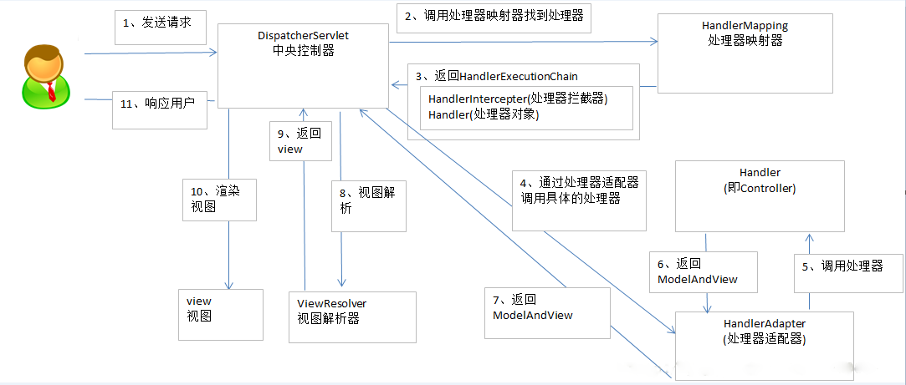

SpringMVC简介
SpringMVC框架是以请求为驱动，围绕Servlet设计，将请求发给控制器，然后通过模型对象，分派器来展示请求结果视图。其中核心类DispatcherServlet，它是一个Servlet，顶层是实现的Servlet接口。
SpringMVC流程图详解

- 用户发送请求至 前端控制器DispatcherServlet。
- 前端控制器DispatcherServlet收到请求后调用处理器映射器HandlerMapping。
- 处理器映射器HandlerMapping根据请求的Url找到具体的处理器，生成处理器对象Handler及处理器拦截器HandlerIntercepter（如果有则生成）一并返回给前端控制器DispatcherServlet。
- 前端控制器DispatcherServlet通过处理器适配器HandlerAdapter调用处理器Controller。
- 执行处理器（Controller，也叫后端控制器）
- 处理器Controller执行完后返回ModelAnView。
- 处理器映射器HandlerAdapter将处理器Controller执行返回的结果ModelAndView返回给前端控制器DispatcherServlet。
- 前端控制器DispatcherServlet将ModelAnView传给视图解析器ViewResolver。
- 视图解析器ViewResolver解析后返回具体的视图View。
- 前端控制器DispatcherServlet对视图View进行渲染视图（即：将模型数据填充至视图中）
- 前端控制器DispatcherServlet响应用户。
web.xml文件配置
在/WEB-INF/ web.xml文件配置SpringMVC的前端控制器DispatcherServlet（前端控制器）
1
2
3
4
5
6
7
8
9
10
11
12
13
14
15
16
17
18
19
20
21
22
23
24
25
26
27
28
29
30
31
32
33
34
35
36
37
38
39
40
41
42
43
44
45
46
47
48
49
50
| <?xml version="1.0" encoding="UTF-8"?>
<web-app version="2.4" xmlns="http://java.sun.com/xml/ns/j2ee"
xmlns:xsi="http://www.w3.org/2001/XMLSchema-instance"
xsi:schemaLocation="http://java.sun.com/xml/ns/j2ee
http://java.sun.com/xml/ns/j2ee/web-app_2_4.xsd">
<servlet-mapping>
<servlet-name>default</servlet-name>
<url-pattern>*.jpg</url-pattern>
</servlet-mapping>
<servlet>
<servlet-name>springmvc</servlet-name>
<servlet-class>
org.springframework.web.servlet.DispatcherServlet
</servlet-class>
<init-param>
<param-name>contextConfigLocation</param-name>
<param-value>classpath:springmvc.xml</param-value>
</init-param>
<load-on-startup>1</load-on-startup>
</servlet>
<servlet-mapping>
<servlet-name>springmvc</servlet-name>
<url-pattern>/</url-pattern>
</servlet-mapping>
<filter>
<filter-name>CharacterEncodingFilter</filter-name>
<filter-class>org.springframework.web.filter.CharacterEncodingFilter</filter-class>
<init-param>
<param-name>encoding</param-name>
<param-value>utf-8</param-value>
</init-param>
</filter>
<filter-mapping>
<filter-name>CharacterEncodingFilter</filter-name>
<url-pattern>/*</url-pattern>
</filter-mapping>
</web-app>
|
springmvc.xml配置
1
2
3
4
5
6
7
8
9
10
11
12
13
14
15
16
17
18
19
20
21
22
23
24
25
26
27
28
29
30
31
32
33
34
35
36
37
38
39
40
41
42
43
44
| <?xml version="1.0" encoding="UTF-8"?>
<beans xmlns="http://www.springframework.org/schema/beans"
xmlns:xsi="http://www.w3.org/2001/XMLSchema-instance"
xmlns:context="http://www.springframework.org/schema/context"
xsi:schemaLocation="http://www.springframework.org/schema/beans
http://www.springframework.org/schema/beans/spring-beans-3.0.xsd
http://www.springframework.org/schema/context
http://www.springframework.org/schema/context/spring-context-3.0.xsd">
<bean class="org.springframework.web.servlet.handler.BeanNameUrlHandlerMapping"></bean>
<bean id="simpleUrlHandlerMapping" class="org.springframework.web.servlet.handler.SimpleUrlHandlerMapping">
<property name="mappings">
<props>
<prop key="/index">indexController</prop>
</props>
</property>
</bean>
<bean id="indexController" class="controller.IndexController"></bean>
<context:component-scan base-package="controller" />
<bean id="irViewResolver" class="org.springframework.web.servlet.view.InternalResourceViewResolver">
<property name="viewClass" value="org.springframework.web.servlet.view.JstlView" />
<property name="prefix" value="/WEB-INF/page/" />
<property name="suffix" value=".jsp" />
</bean>
<bean class="org.springframework.web.servlet.mvc.SimpleControllerHandlerAdapter"></bean>
<bean id="multipartResolver" class="org.springframework.web.multipart.commons.CommonsMultipartResolver"/>
</beans>
|
视图解析器InternalResourceViewResolver
ModelAndView对象中即可以封装真实视图路径名，也可以封装视图路径的逻辑名。在springmvc中，如果是真实名称，可以不配置，如果不是，要配置前缀和后缀。逻辑视图名需要在controller中返回ModelAndView指定,最终jsp物理地址：前缀+逻辑视图名+后缀。
1
2
3
4
5
6
|
<bean class="org.springframework.web.servlet.view.InternalResourceViewResolver">
<property name="prefix" value="/WEB-INF/jsp/"/>
<property name="suffix" value=".jsp"/>
</bean>
|
映射器BeanNameUrlHandlerMapping
该映射器适合一个请求访问一个控制器，将程序员定义的Action所对应的<bean>标签的name属性作为请求路径。
1
2
3
4
5
|
<bean name="/AAA" class="控制类的路径带类名"></bean>
<bean class="org.springframework.web.servlet.handler.BeanNameUrlHandlerMapping"></bean>
|
映射器SimpleUrlHandlerMapping
多个路径对应同一个控制器。
1
2
3
4
5
6
7
8
9
10
11
12
13
14
15
16
17
|
<bean id="userActionID" class="控制类的路径带类名"></bean>
<bean class="org.springframework.web.servlet.handler.SimpleUrlHandlerMapping">
<property name="mappings">
<props>
<prop key="/AAA">userActionID</prop>
<prop key="/BBB">userActionID</prop>
<prop key="/CCC">userActionID</prop>
</props>
</property>
</bean>
|
适配器SimpleControllerHandlerAdapter
1
2
|
<bean class="org.springframework.web.servlet.mvc.SimpleControllerHandlerAdapter"></bean>
|
控制器ParameterizableViewController
直接将请求跳转到jsp页面，不经过程序员写的控制器
1
2
3
4
|
<bean name="/index.action" class="org.springframework.web.servlet.mvc.ParameterizableViewController">
<property name="viewName" value="/index.jsp"/>
</bean>
|
SpringMVC注解
SpringMVC本身就是Spring的子项目，对Spring兼容性很好，不需要做很多配置。配置一个Controller扫描就可以了，让Spring对页面控制层Controller进行管理。
组件扫描器
省去在spring容器配置每个Controller类的繁琐。使用<context:component-scan>自动扫描标记@Controller的控制器类
1
| <context:component-scan base-package="控制类包名不带类名"/>
|
注解式映射器
对类中标记了@ResquestMapping的方法进行映射。根据@ResquestMapping定义的url匹配@ResquestMapping标记的方法，匹配成功返回HandlerMethod对象给前端控制器。
HandlerMethod（处理器方法）对象中封装url对应的方法Method。
1
| <bean class=" org.springframework.web.servlet.mvc.method.annotation.RequestMappingHandlerMapping "/>
|
注解式适配器
对标记@ResquestMapping的方法进行适配。
1
| <bean class=" org.springframework.web.servlet.mvc.method.annotation.RequestMappingHandlerAdapter "/>
|
注解驱动
为了省事，直接受用注解驱动。因为直接配置处理器映射器和处理器适配器比较麻烦。
SpringMVC使用<mvc:annotation-driven>自动加载RequestMappingHandlerMapping和RequestMappingHandlerAdapter
可以在springmvc.xml配置文件中使用<mvc:annotation-driven>替代注解处理器和适配器的配置。
控制器类
需要在类上添加@Controller注解，把Controller交由Spring管理
在方法上面添加@RequestMapping注解，里面指定请求的url
@RequestMapping(value="item")或@RequestMapping("/item"）
但是,value的值是数组，可以将多个url映射到同一个方法
@RequestMapping(value = { "itemList", "itemListAll" }
This is copyright.